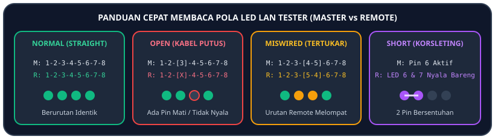

Kabel Baru Jadi, tapi PC Tetap "No Internet" — Bagaimana Membuktikannya?
Teknisi jaringan tidak menebak sumber kerusakan. Dengan alat ukur dan SOP yang tepat, kamu bisa menemukan pin yang putus atau tertukar hanya dalam hitungan detik.
Kamu baru saja memasang konektor RJ-45 pada kabel UTP 15 meter untuk lab komputer. Saat dicolok ke Switch dan PC, lampu link mati total. Langkah mana yang kamu pilih?
- TP 4.1 Kenali Fungsi Alat Ukur: Membedakan fungsi LAN Tester, OPM/OTDR, Multimeter, Earth Tester, dan Wi-Fi Analyzer serta anatomi LAN Tester 3D.
- TP 4.3 Rakit & Operasikan: Menyusun urutan warna kabel UTP (T568B/T568A) di konektor RJ-45 3D, lalu mengujinya langsung di LAN Tester.
- TP 4.2 Analisis Gangguan: Membaca pola LED Master–Remote untuk mendiagnosis kabel Normal, Open, Miswired, maupun Short.
- TP 4.4 Rawat Sesuai SOP: Menjalankan urutan pemeliharaan 3D agar alat ukur awet, aman, dan akurat.
Bedah Anatomi 3D LAN Tester & Peta Alat Ukur Industri
Klik langsung komponen pada model 3D atau daftar di bawah untuk memfokuskan kamera, lalu kenali 6 alat ukur wajib di industri TJKT.
Rakit Urutan 8 Kawat UTP pada Konektor RJ-45 3D
Perbaiki urutan warna pada Ujung A dan cek Ujung B. Setiap perubahan langsung tampil nyata pada konektor RJ-45 3D transparan, lalu langsung siap diuji di LAN Tester.
Lab Maya LAN Tester 3D & Detektif Gangguan Kabel
Nyalakan saklar ON, S (Slow), atau klik langsung saklar pada model 3D. Amati nyala LED dan jejak pin Master–Remote untuk mendiagnosis kabel.
Pilih kabel yang dipasang pada port Master & Remote LAN Tester 3D:

SOP Pemeliharaan Alat Ukur 3D & Uji Kompetensi
Jalankan 4 langkah perawatan alat ukur secara berurutan pada model 3D, kemudian tuntaskan 5 soal studi kasus.
Rekap Capaian Praktik & Refleksi Diri
Periksa seluruh capaian praktikum 3D hari ini, lengkapi catatan refleksimu (tersimpan otomatis), lalu unduh atau salin laporan untuk dikumpulkan.